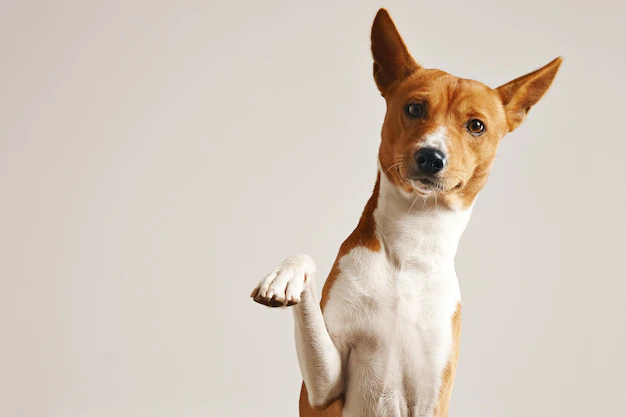
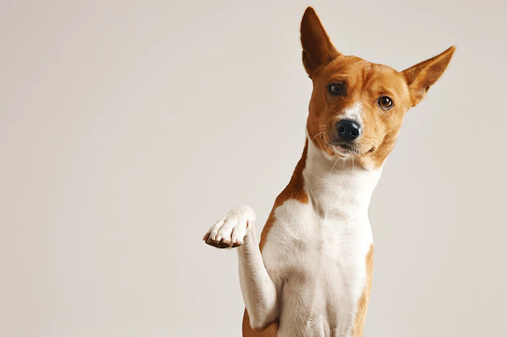

ESPECIALISTAS
En AS.PR.A contamos con un grupo de veterinarios de primer nivel, para garantizar que la mascota en adopcion, vaya a su nuevo hogar en un estado de salud optimo. Entra y conocelos
GALERIA
¿Querés saber cómo luce tu futuro compañero canino? ¡Aquí te mostramos algunos ejemplos de ellos! Podés indagar más a fondo ingresando a los links mencionados anteriormente como "Seguimiento" o directamente en el botón de "Adoptar".


 
